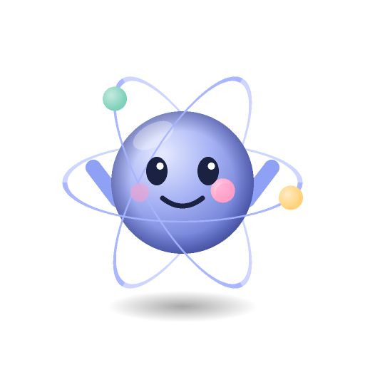

Um app desktop para conversar com o Claude Code, o Codex e outros agentes de código numa interface só. O app não é um modelo de IA: ele usa as CLIs oficiais que você já tem instaladas e o login que você já fez nelas.
Instalador para Windows 10 (1809+) e Windows 11. macOS e Linux não são suportados por enquanto.
Tudo numa janela só, com o que o agente faz ao lado da conversa.
/ com comandos, skills e comandos das CLIsVocê escolhe o motor de cada conversa, e pode montar um orquestrador para dividir os papéis.
Provedores como OpenRouter e DeepSeek, com a chave guardada no cofre do sistema.
Cada papel (planejar, executar, conversar e subagentes) pode usar um agente e um modelo diferentes.
Uma casca em volta das ferramentas que você já usa.
claude ou codex.Instalador e notas de cada versão ficam na página de releases.
.exe. O Windows pode mostrar um aviso do SmartScreen, porque o instalador ainda não tem assinatura de código.